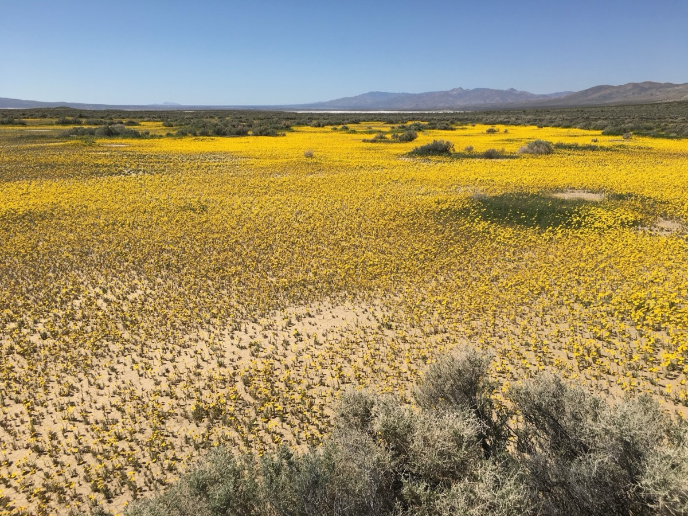
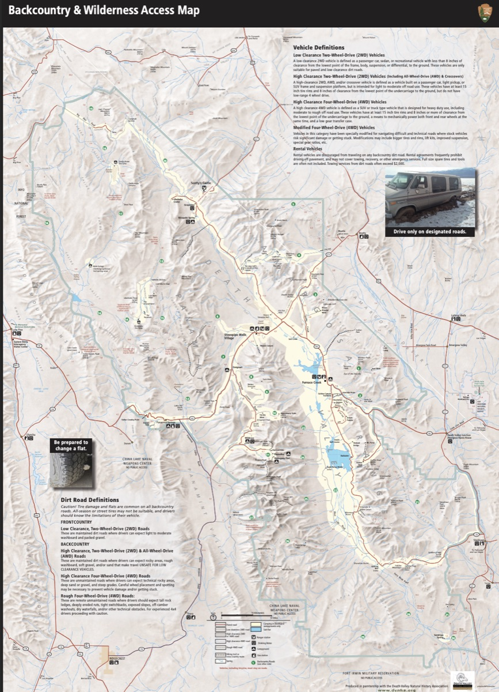
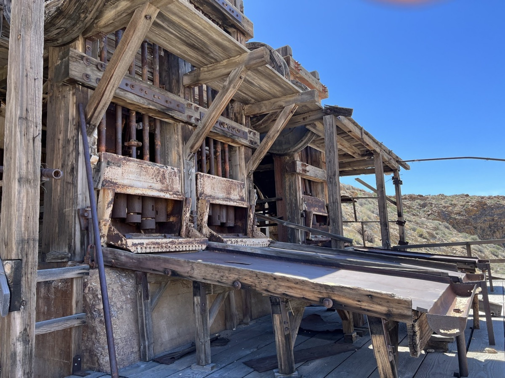
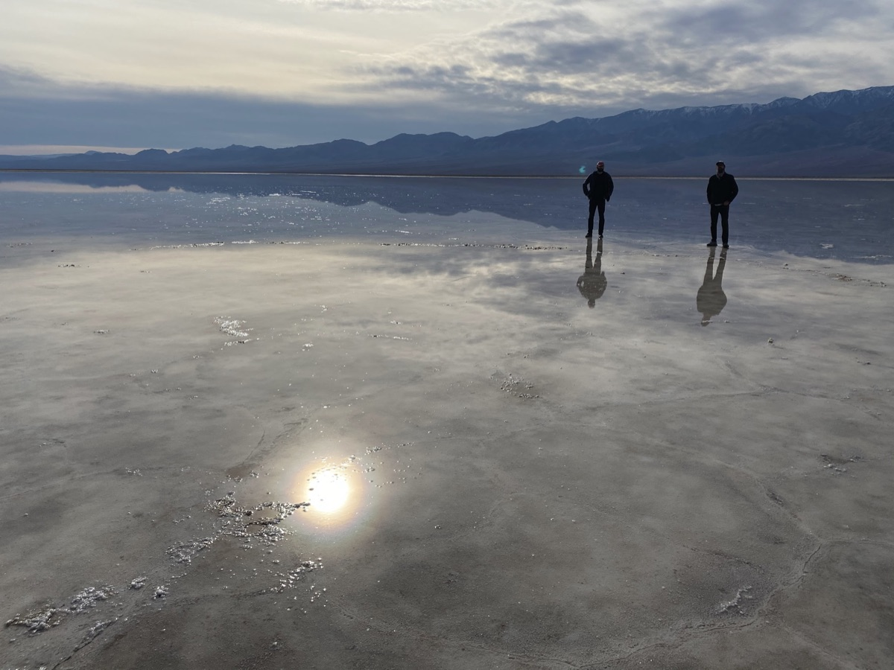

Come join us for a few days of exploring Death Valley. For this trip we will have a very flexible agenda. We will basecamp at the Panamint Springs Resort and hang / explore from there Thursday evening through Monday morning.
Exciting News - Super Bloom 2026 may happen
It looks very promising to experience a super blooming in Death Valley in 2026.
Here is a great article about it:
And a great site to check the status of the bloom:
So get your cameras ready and join us for a great trip!
The idea of this adventure is to be flexible. Join whether you've been to Death Valley many times or if this is your first time. Join whether you're novice to off-roading or have plenty of experience. Join whether you want to tackle challenging trails or just hang around camp and relax.
📍 More Info and to Sign-up
- Trip Website: Death Valley Trip Page
- OB Forum: Rally Point for RSVP and Discussion Thread
Change of Plans
If you RSVP'd and decide not to go, please update your RSVP to "NOT GOING" to open up a spot and let us know.
Trip Logistics
Dates
Thursday, February 12 – Monday, February 16, 2026
Feel free to join for part of the time if you can't make the full trip.
Meet-up Location
Date: Thursday, Feb 12, 2026
Time: 6:30 AM
Location: McDonald's at Santa Rita and Highway 580 E.
37°42'02.9"N 121°52'10.7"W
37.700795, -121.869642
Mid-Point Convoy Meetup (South Bay Group)
Date: Thursday, Feb 12, 2026
Location: Shell Gas Station
24729 Mercey Springs Rd, Los Banos, CA 93635
36°55'47.2"N 120°50'29.8"W
36.929788, -120.841611
BaseCamp: Panamint Springs Resort
Panamint Springs Resort – Rustic, off-grid resort with camping, RV sites, motel rooms,
restaurant, bar, gas, and store.
Reserve Camping/RV Spot
Here
Located on Hwy 190, ~10 miles inside the western entrance of Death Valley National Park.
36°20'21.9"N 117°28'05.2"W
36.339407, -117.468115
⚠️ IMPORTANT Reservations
- Make reservations at the campground as soon as possible – Monday is Presidents' Day weekend and sites fill up fast.
- 2025-12-18 UPDATE: Tent spots are sold out, but Dry RV spots are still available for Feb 12–15.
- Mention the Overland Bound group when reserving to be placed near each other.
Expected Weather in February
February is one of the best times to visit Death Valley – pleasant daytime highs averaging 63–73°F (17–23°C) and cooler nights around 38–46°F (3–8°C). Layers are essential, as mornings/evenings can be chilly. Occasional wildflowers may bloom if rainfall has been good.
Current Weather
Expected Trip Weather
💡 Winter Weather Preparedness
Don't be scared by occasional "fear-mongering" bad weather news. It's normal for winter storms to cause temporary disruptions in Death Valley. We are closely monitoring conditions and will adjust our daily routes as needed. Death Valley is a vast area with plenty of options, so we can always find great adventures regardless of weather conditions.
Road Conditions
Weather events can impact road accessibility. Before your trip, please check the Current Road Conditions page on the NPS website for the latest status.
Trip Expectations & Terrain
Overall moderate level with plenty of easy scenic drives from basecamp. Remote areas may include challenging obstacles – routes can be adjusted to match group skill/comfort. High clearance and 4WD required for some sections; stock vehicles should be fine for most.
Itinerary & Exploration Options
Panamint Springs is an excellent base for exploring western Death Valley. We'll build our daily plans together based on group interests, weather, and conditions. Here are some of the amazing locations we may explore:
Backcountry Reference Map

Download Backcountry Map (PDF)
Western Death Valley Highlights
- Darwin Falls – A rare year-round waterfall and desert oasis accessible via a 2-mile moderate hike. This hidden gem offers a surprising contrast to the surrounding desert landscape.
- Father Crowley Overlook – Spectacular viewpoint offering dramatic rainbow canyon views where the geology creates stunning color layers in the rock formations.
- Saline Valley & Hot Springs – Remote valley with natural hot springs. Access requires careful planning and suitable vehicles, but rewards adventurers with pristine desert wilderness.
- Cerro Gordo – Historic mining town perched high in the Inyo Mountains, offering incredible views and a glimpse into Death Valley's silver mining past.
- Panamint Dunes – Isolated sand dunes accessible via a challenging off-road route,
offering solitude and unique desert landscapes.

- Brigg's Cabin (35.99574, -117.16303) – Remote historic cabin accessible to those seeking off-the-beaten-path exploration.
- Trona Pinnacles – Unique geological feature with over 500 tufa spires rising from the bed of the Searles Lake basin. Visit BLM site
Wildrose & Emigrant Canyon Area
This area is rich with historic sites and scenic drives:
- Charcoal Kilns & Wildrose Peak – Ten beehive-shaped kilns built in the 1870s, remarkably well-preserved. Wildrose Peak offers excellent hiking with panoramic views.
- Eureka Mine & Aguereberry Point – Historic mining sites with spectacular overlooks. Aguereberry Point provides one of the best views in Death Valley. Watch this video tour
- Skidoo Stamp Mill – Remains of a 1900s-era gold mining operation, accessible via scenic backcountry roads. Learn about Skidoo townsite and read historical stories. 
- Argenta Mine – Remote historic mine site featuring old mining equipment and abandoned vehicles, a photographer's paradise. Watch video tour
Classic Death Valley Attractions
- Mesquite Flat Sand Dunes – The most accessible dunes in Death Valley, perfect for sunrise or sunset photography and exploration.
- Badwater Basin – The lowest point in North America at 282 feet below sea level, featuring vast salt flats. 
- Keane Wonder Mine – Abandoned mine with interesting structures and desert scenery.
- Chloride Cliff – Colorful mineral deposits creating striking cliff formations near Beatty.
Northern Death Valley Adventures
- Scotty's Castle Road – Scenic drive through northern Death Valley (note: Scotty's Castle itself remains closed for flood repairs).
- Ubehebe Crater – Massive volcanic crater formed by a steam explosion, with hiking trails around the rim.
- The Racetrack – Famous for its mysterious moving rocks. For the adventurous, we may
offer route options:
- Return via the same route (easier)
- Lippincott Mine Road (very challenging, for experienced drivers only)
- Hunter Mountain Road (moderate difficulty)
- Titus Canyon – Spectacular one-way canyon drive (when open) featuring narrows, petroglyphs, and ghost towns.
Mining History & Historic Resources
This region is steeped in fascinating human history. Explore these deep dives into the past:
- Panamint Springs Resort History – Official Site
- Wildrose Charcoal Kilns – Watch video tour
- Harrisburg, Cashier Mill, Eureka Mine, and Aguereberry Point – Comprehensive guide
- Wild Rose Mining District Information – Detailed accounts of mines along Emigrant Canyon Road (Skidoo, Argentina, Cashier) and the legendary characters of Death Valley. Read NPS History
- Death Valley Mining History (2-Volume Book) – For the true history buff. Available here
- 1952 USGS Topographic Map – Emigrant Canyon Quadrangle showing original roads and sites. View on NGMDB (Click over "Emigrant Pass" and select maps on the right).
Greenwater Valley
This valley is Sandwiched between the Black Mountain Range and the Greenwater Mountain Range, on the South-Eastern border of the park. One can access this off-roaders paradise from Dante's View road at the North, as well the 178 near Tecopa (visit the hot springs while you're over there), at the South. Greenwater Valley Road is nearly 29 miles long, along which you can find ghost towns, abandoned mines, killer hiking peaks, to just scratch the surface.
Daily Planning: We'll discuss each day's options together, allowing everyone to choose adventures that match their interests and comfort level. Whether you want challenging trails or scenic drives, there's something for everyone!
Get Ready Before We Go
🛑 SAFETY REQUIREMENTS
Rear Amber Chase Light and HAM Radio communications are REQUIRED to travel with the group.
Why Amber Chase Lights?
Dusty trails are common – amber lights penetrate dust far better than white or red, helping prevent rear-end collisions in low visibility. Learn more about Why Chase Lights?
HAM Radio
Program to 146.460 MHz (simplex). Handhelds work great even without a license for listening.
If you don't have a ham radio yet, check out our guide to get started.
Other Essentials
- Offline navigation (download GPX from Rally Point – limited/no cell service)
- Extra fuel (gas available at resort but remote exploring adds mileage)
- Off-road tires, full-size spare, recovery gear
- Plenty of water, desert prep, meds, emergency kit
Frequently Asked Questions & Resort Info
🍴 Restaurant and Bar
We feature the best cooking in the valley along with a large selection of American and foreign made craft brews!
⛽ Gas Station & General Store
Gas, ATM, snacks & beverages, sundries & camping supplies, apparel & gift items, travel supplies.
🏕️ Campsite Details
No hookups. All sites have fire pits and some have picnic tables. Picnic tables not guaranteed.
🚿 Showers & Facilities
Showers are included with the site fee for all campsites and tent cabins. They are located in the restroom facilities and do not require coins to operate. Showers are available without a campsite as well. Please inquire at the general store.
... Let the adventure
begin ...
making memories ...